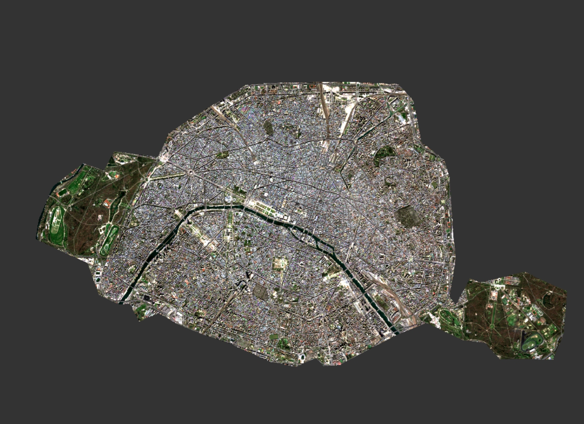
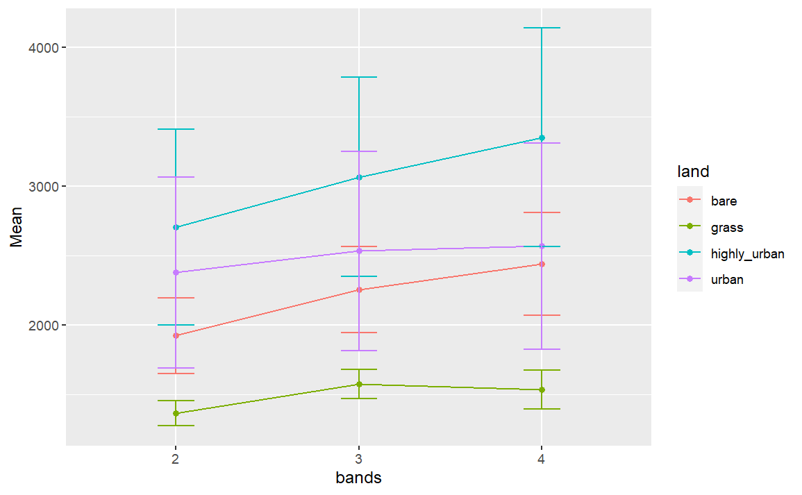
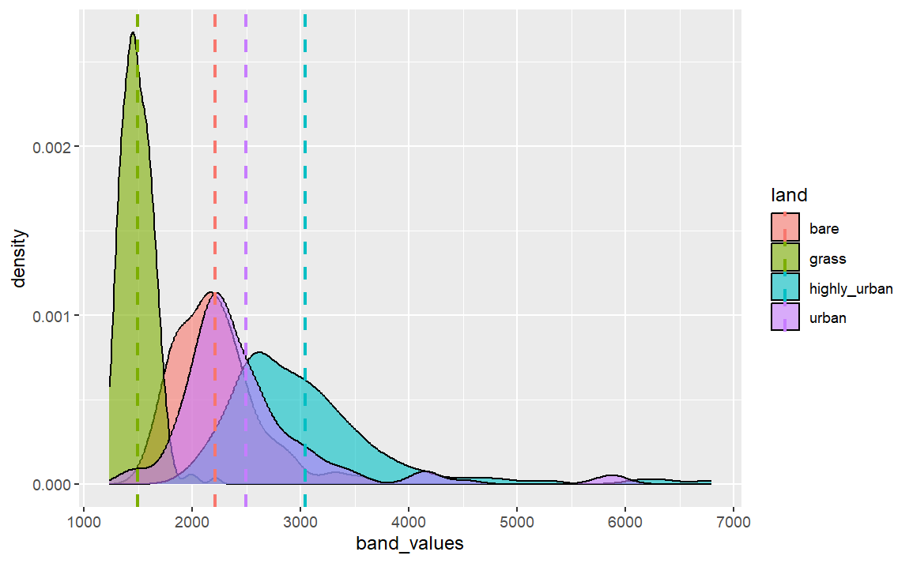

1 week1 - Introduction
1.1 Summary
1.1.1 Remote sensing
This week mainly introduced the principles of remote sensing. Remote sensing is the acquisition of information about an object or phenomenon without making physical contact with the object (Schowengerdt, 2007).
Remote sensing can be divided into passive remote sensing and active remote sensing. In passive remote sensing, sensors detect and measure the radiation emitted or reflected by objects or surfaces. In active remote sensing, sensors emit their own radiation and measure the response from the objects or surfaces being observed.
1.1.2 Band
In remote sensing, a “band” refers to a specific range of wavelengths within the electromagnetic spectrum that is used to acquire data about the Earth’s surface or atmosphere. Each band corresponds to a particular portion of the spectrum, such as visible light, infrared, or microwave radiation. Each band provides unique information about the properties of the Earth’s surface or atmosphere. By combining data from multiple bands, remote sensing analysts can create composite images or datasets that offer a comprehensive view of the area being observed, enabling a wide range of applications in environmental monitoring, agriculture, urban planning, and other fields.
1.1.3 Resolutions
Remotely sensed data and applications will vary based on the four resolutions: Spatial, Spectral, Temporal, Radiometric (Jensen, 2007).
Spatial Resolution: the size of the smallest discernible feature in an image. It is usually expressed in terms of pixels per unit area or ground area covered by each pixel.
Spectral Resolution: the range of wavelengths or bands of the electromagnetic spectrum that a remote sensing system can detect.
Radiometric Resolution: the sensitivity of a remote sensing system to variations in electromagnetic radiation intensity.
Temporal Resolution: the frequency at which data is collected over the same area.
Remote sensing has multiple applications: land cover data set, Urban / green space coverage and accessibility, Pollution studies, Illegal logging, Forest fires, Temperature studies, Flooding / disaster response / building footprints.
1.2 Applications
In practice, I downloaded remote sensing data for Paris from landset as well as sentinel and calculated spectral values in R for several different areas (vegetation, buildings, bare land).


1.3 Reflection
At the beginning of this module, I was wondering what this the link between remote sensing and smart city, and how is it applied to solve the real world problem. After the first lecture. I got to know that it is actually earth observation method, and from this method we can gather data about the Earth’s surface, atmosphere, and oceans, from which we can analysis the changes.
In my previous job, I was exposed to satellite imagery to identify illegal structures and dispose of them, but I didn’t know how it worked at the time, and at the end of the week, I got to know that illegal land use can be abstract suspected illegal land use information in urban areas using post-classification comparison technique.(Chen, 2008)
1.4 References
Chen, F. et al. (2008) “Abstracting of suspected illegal land use in urban areas using case-based classification of remote sensing images,” in Proceedings of SPIE. [Online]. 2008 Bellingham, Wash: SPIE. pp. 71230R-71230R – 6.
Jensen, J. R. (2007) Remote sensing of the environment : an earth resource perspective / John R. Jensen. 2nd ed. Upper Saddle River, N.J: Pearson Prentice Hall.
Schowengerdt, Robert A. (2007). Remote sensing: models and methods for image processing (3rd ed.). Academic Press. p. 2. ISBN 978-0-12-369407-2. Archived from the original on 1 May 2016. Retrieved 15 November 2015.